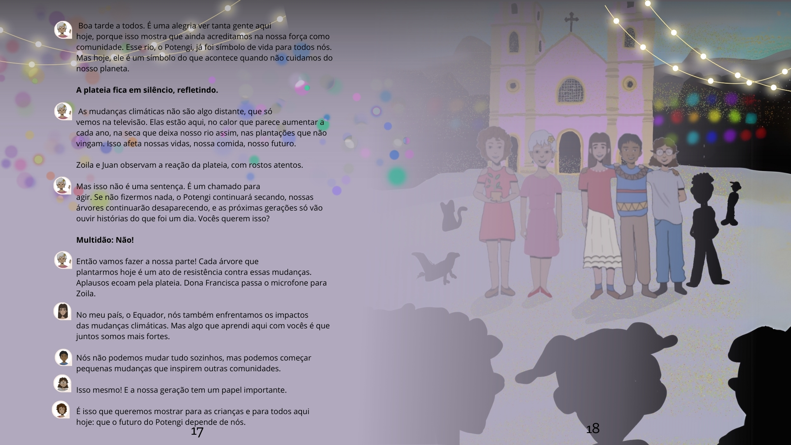

A ideia para este livro surgiu a partir de nossa jornada de aprendizado e das experiências sobre as mudanças climáticas e como elas afetam diferentes partes do mundo. Através dessa história, queremos mostrar que as comunidades vulneráveis sofrem com mais intensidade os impactos causados pelas mudanças climáticas e como o agir local pode inspirar o global.

First slide label
Some representative placeholder content for the first slide.

Second slide label
Some representative placeholder content for the second slide.

Third slide label
Some representative placeholder content for the third slide.